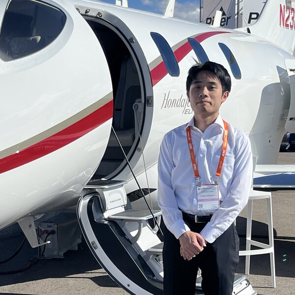

Ryosuke Kano
Ph.D student in Department of Aerospace Engineering at Tohoku University
Visiting Research Student, University of Washington (Oct 2026 – Mar 2027)
Seattle, WA, USA
My research focuses on multiscale computational modeling of composite materials, with particular emphasis on manufacturing processes and mechanical failure. I combine computational mechanics and data-driven approaches to improve the reliability and performance of advanced composite structures.
News
- Selected as a JSPS Research Fellow (DC2) by the Japan Society for the Promotion of Science.
- Attended NBAA-BACE 2026, the business aviation convention in Las Vegas. Photos (10)
- Attended the First U.S.–Japan Workshop on Advanced Composite Manufacturing, co-hosted by the University of Washington and Tohoku University at the UW Advanced Composites Center. Photos (5)
- Started a six-month research stay with Prof. Marco Salviato and Prof. Navid Zobeiry at the University of Washington.
- Co-authored paper on a multi-scale framework for designing composite wind turbine blades published in Engineering Structures.
- Presented our concurrent multiscale analysis of compressive strength with fiber misalignment at the ASC 41st Annual Technical Conference in Madison, Wisconsin. Photos (5)
- Co-authored paper on multi-objective Bayesian optimization of composite aircraft wings published in Composite Structures.
- Started my Ph.D. in Aerospace Engineering at Tohoku University.
- Received my M.Eng. in Aerospace Engineering from Tohoku University. Photos (4)
- Received the JSME Miura Award from the Japan Society of Mechanical Engineers.
- Received the Excellent Student Presentation Award at the 17th Japan Conference on Composite Materials (JCCM). Photos (4)
- First-author paper on structural optimization of composite aircraft wings considering fluid–structure interaction and damage tolerance published in Aerospace Science and Technology.
- Won the ASC Student Simulation Challenge hosted by the American Society for Composites. Photos (2)
- Visited Prof. Marco Salviato and Prof. Navid Zobeiry's group at the University of Washington as a visiting research student. Photos (12)
- Visited Prof. Vincent Tan's group at the National University of Singapore. Photos (3)
- Presented our multidisciplinary optimization of composite aircraft at the AIAA SciTech Forum 2025 in Orlando, Florida. Photos (7)
- Ran a full marathon with my lab mates! Photos (3)
- Received the Student Excellent Presentation Award at the 62nd Aircraft Symposium (JSASS). Photos (3)
- Won the Boeing Externship Program as part of the Tohoku University team. Photos (6)
- Team Windnauts won the Birdman Rally with a 36.9 km flight. I was chief designer and project leader. Photos (18)
Publications
Also on Google Scholar and ORCID.
Journal Articles
-
Eng. Struct. 2026
Multi-scale numerical framework for effects of fiber properties on designing composite wind turbine blades
-
Compos. Struct. 2026
Multi-objective Bayesian optimization of composite aircraft wings using various carbon fibers
-
Aerosp. Sci. Technol. 2025
Structural optimization of composite aircraft wing considering fluid–structure interaction and damage tolerance assessment using continuum damage mechanics
Conference Presentations
-
ASC 2026
Longitudinal Compressive Strength Prediction of Unidirectional Composites with Fiber Misalignment Using Concurrent Multiscale Analysis
American Society for Composites 41st Annual Technical Conference, Wisconsin, USA, Sep. 2026.
-
JCCM 2026
Longitudinal Compressive Strength Evaluation of Unidirectional Composites Using Monolithic Multiscale Analysis
17th Japan Conference on Composite Materials, Ibaraki, Japan, Mar. 2026. 🏆 Excellent Student Presentation Award
-
AIAA SciTech 2025
Conceptual design of composite aircraft using multidisciplinary optimization
2025 AIAA SciTech Forum, Florida, USA, Jan. 2025. AIAA Paper 2025-0002.
-
ICFD 2024
Multi-Objective Optimization for Aircraft Wing Shapes Using Advanced Composite Materials
Twenty-first International Conference on Flow Dynamics, Sendai, Japan, Nov. 2024.
-
JSASS 2024
Study on an Optimization Method for Aircraft Wing Shapes Using Advanced Composite Materials
62nd Aircraft Symposium, Fukui, Japan, Oct. 2024. 🏆 Student Excellent Presentation Award
-
JSASS 2023
Conceptual design of composite aircraft using aerostructural optimization
61st Aircraft Symposium, Kitakyushu, Japan, Nov. 2023.
Education
-
Ph.D. in Aerospace Engineering
Tohoku University, Sendai, Japan
Advisor: Prof. Tomonaga Okabe
-
M.Eng. in Aerospace Engineering
Tohoku University, Sendai, Japan
Advisor: Prof. Tomonaga Okabe
-
B.Eng. in Mechanical and Aerospace Engineering
Tohoku University, Sendai, Japan
Advisor: Prof. Tomonaga Okabe
Teaching
-
Teaching Assistant
Computer Programming Laboratory (Python), Tohoku University
-
Teaching Assistant
Materials Testing Laboratory, Tohoku University
Experience
-
Visiting Research Student
University of Washington, Seattle, USA
Host: Prof. Marco Salviato and Prof. Navid Zobeiry
-
Visiting Research Student
University of Washington, Seattle, USA
Host: Prof. Marco Salviato and Prof. Navid Zobeiry
-
Visiting Research Student
National University of Singapore, Singapore
Host: Prof. Vincent Tan
-
Engineering Intern
Mitsubishi Heavy Industries, Japan
Awards & Honors
- Oct 2026 Selected for the JSPS Research Fellowship for Young Scientists (DC2), Japan Society for the Promotion of Science
- Sep 2026 Selected for the JASSO Student Exchange Support Program (Scholarship for Short-term Study Abroad), Japan Student Services Organization
- Mar 2026 JSME Miura Award, The Japan Society of Mechanical Engineers
- Mar 2026 Excellent Student Presentation Award, 17th JCCM, Japan Society for Composite Materials Photos (4)
- Oct 2025 First Prize, Student Simulation Challenge, American Society for Composites Photos (2)
- Apr 2025 Selected for the Graduate Program for Integration of Mechanical Systems (GP-Mech), Tohoku University
- Oct 2024 Student Excellent Presentation Award, 62nd Aircraft Symposium, JSASS Photos (3)
- Jul 2024 First Prize, Boeing Externship Program, Tohoku University Photos (6)
- Jul 2022 First Prize, Birdman Rally (Team Windnauts, chief designer & project leader) Photos (18)
Expertise
Languages
Japanese (native) · English (professional working proficiency)
Contact
Affiliation
Okabe Laboratory
Department of Aerospace Engineering
Tohoku University, Sendai, Japan